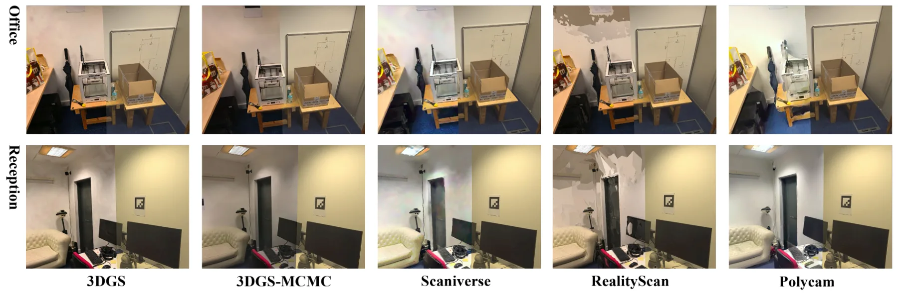
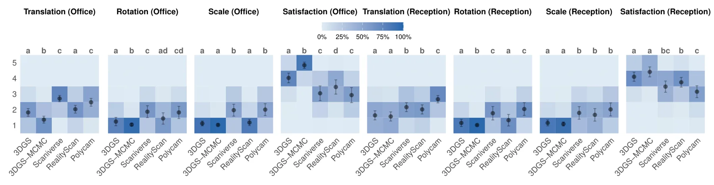
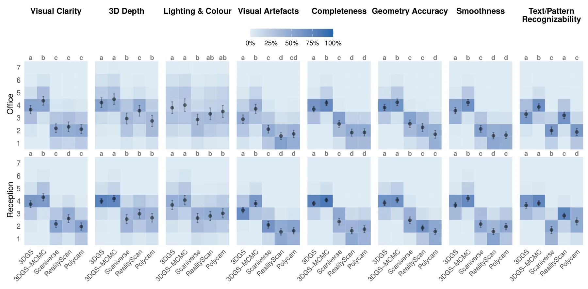
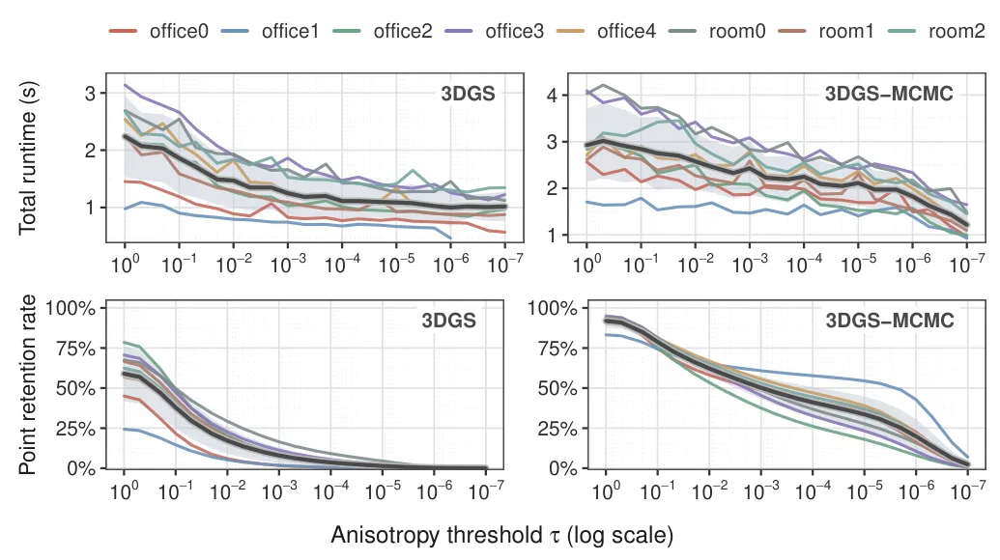
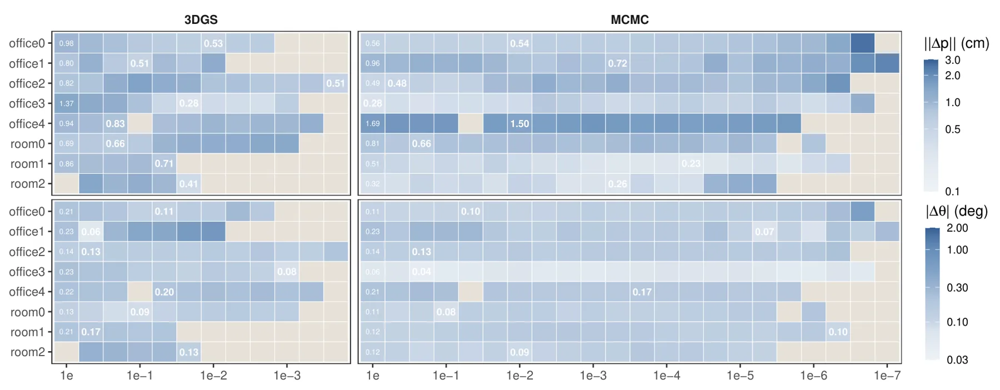
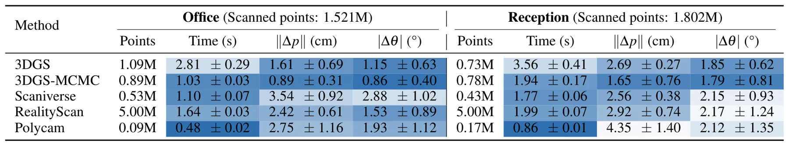
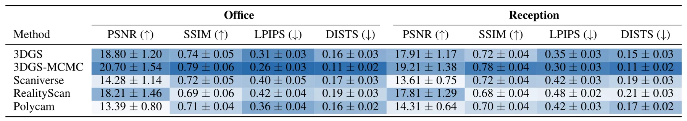
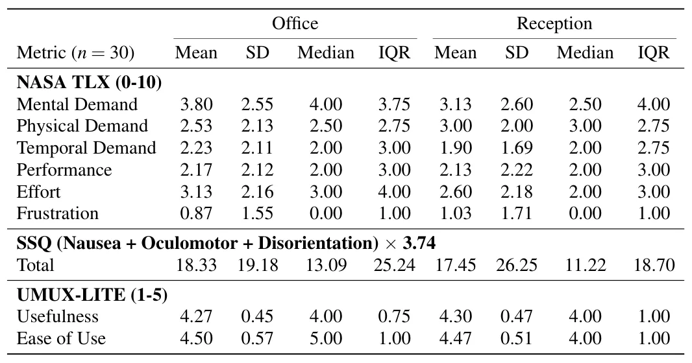

MR-Compare：3DGS、网格与真实环境的空间对齐比较框架MR-Compare: A Mixed-Reality Framework for Spatially Grounded Visual Comparison of 3D Gaussian Splatting and Mesh Reconstructions with the Physical Environment
直接命中 3DGS、mesh reconstruction 与 registration，且有真实系统和开源项目；场景规模较小，旋转误差和泛化仍需正文核查。
一句话工作总结
把 3DGS/mesh 与真实环境做厘米级混合现实配准，并以 Gaussian anisotropy 零训练剪枝改善注册。
摘要
MR-Compare 是一个混合现实框架，用 live video see-through 将 3D Gaussian Splatting 和 mesh reconstruction 与物理环境做空间对齐比较。系统运行于 PC-tethered Meta Quest 3，结合两阶段注册管线与 3D Slider。作者在两个静态室内房间中评估五种桌面和移动重建工作流，并开展 30 人探索性用户研究；所有工作流均达到厘米级平移误差，两种桌面 3DGS 整体表现最强，其中 3DGS-MCMC 注册误差最低。论文还提出利用 Gaussian anisotropy 的零训练过滤器，适度剪枝可提高注册稳健性并降低残差。
We introduce MR-Compare, a mixed reality framework for spatially grounded visual comparison between 3D Gaussian splatting and mesh reconstructions with live video see-through (VST). Implemented on a PC-tethered Meta Quest~3, it combines a two-stage registration pipeline with a 3D Slider for cross-media comparison. We evaluated five representative desktop and mobile reconstruction workflows through a real-world benchmark with an exploratory user study ($n=30$) in two static indoor rooms. MR-Compare achieved centimetre-level translation error across all workflows. The two desktop 3DGS workflows showed the strongest overall pattern, with 3DGS-MCMC yielding the lowest registration error and strongest VST-referenced visual consistency. Room-session measures indicated high perceived usability and low workload. We further propose an anisotropy filter, a zero-shot module that leverages Gaussian anisotropies to improve 3DGS registration in MR-Compare. A controlled Replica threshold sweep shows that moderate pruning can improve robustness and reduce residual errors. These results establish system-level feasibility in the tested setting rather than task-level effectiveness or standalone deployment. The project is available at https://github.com/changruizhu96/MR-Compare.
中文解读摘录
- 作者：Changrui Zhu, Ernst Kruijff, Pengju Zhang, Simon Julier
- 价值判断：今天唯一直接连接 3DGS、mesh reconstruction 与空间 registration 的新稿；用 live video see-through 为不同重建管线提供物理环境参照，而非只比较离线图像指标。
- 技术要点：Meta Quest 3 上实现两阶段注册和 3D Slider；另提出利用 Gaussian anisotropy 剪枝的零训练过滤器，提高 3DGS 注册稳健性。
- 关键结果：五种桌面/移动重建工作流均达到厘米级平移误差；两种桌面 3DGS 整体表现最好，其中 3DGS-MCMC 的注册误差最低。
- 后续核查：旋转误差、两房间之外的泛化、动态场景、初始化依赖，以及 anisotropy threshold 对几何细节和配准 basin 的影响。
- 链接：arXiv · PDF · 代码
图表/页面预览

{kind=link}

{kind=link}

{kind=link}

{kind=link}

{kind=link}

{kind=link}

{kind=link}

{kind=link}
